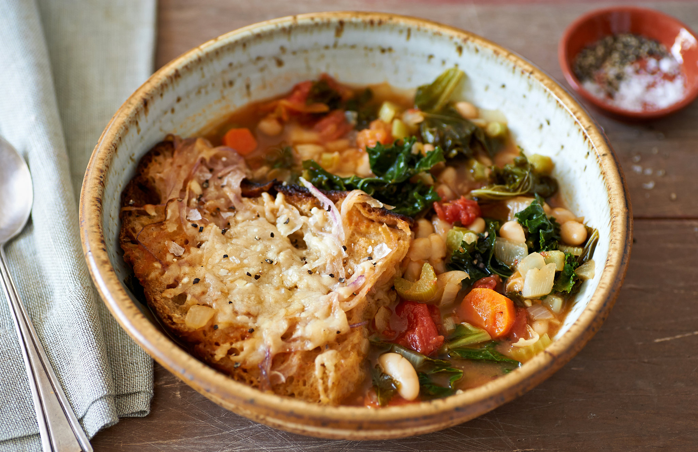

Ribollita Recipe

Ingredients
- Onions
- Garlic
- Vegetable stock cubes
- Carrots
- Celery
- Kale
- Diced tomatoes
- White cooking wine
- White beans
- Black pepper
- Loaf of bread
- Daiya Vegan Parmesan Cheese
Steps
- Chop 2 cups of carrots
- Chop 2 cups of celery
- Chop 2 cups of kale
- Dice 2 cups of onions
- Mince 1 tbsp of garlic
- Saute the onions on low heat until they are translucent
- Then add the garlic to the onions
- Add the carrots, celery, and kale to the pan
- Then add 28 oz of diced tomatoes, followed by a splash of white cooking wine
- Add 2 cans of white beans, reduced for 3-4 minutes
- While reducing, boil 3 vegetable stock cubes in 6 cups of water in a large pot
- Add the pan containing the vegetables to the pot with the vegetable stock cubes
- Add 2 tbsp of black pepper to the pot
- Cook closed on a low simmer for 4-6 hours
- Break the loaf of bread into small pieces and add into the pot
- Cook on a low simmer for an additonal 3 hours, stirring every 30 minutes
- Add 1/2 cup of daiya fake parmesan cheese